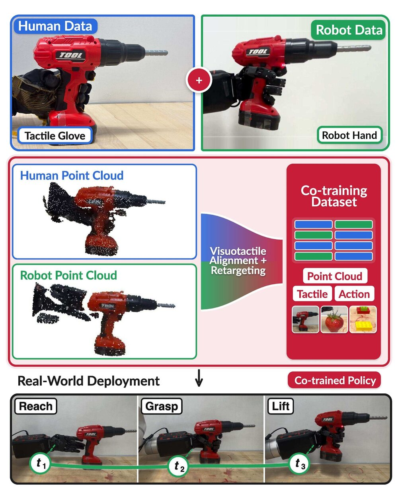
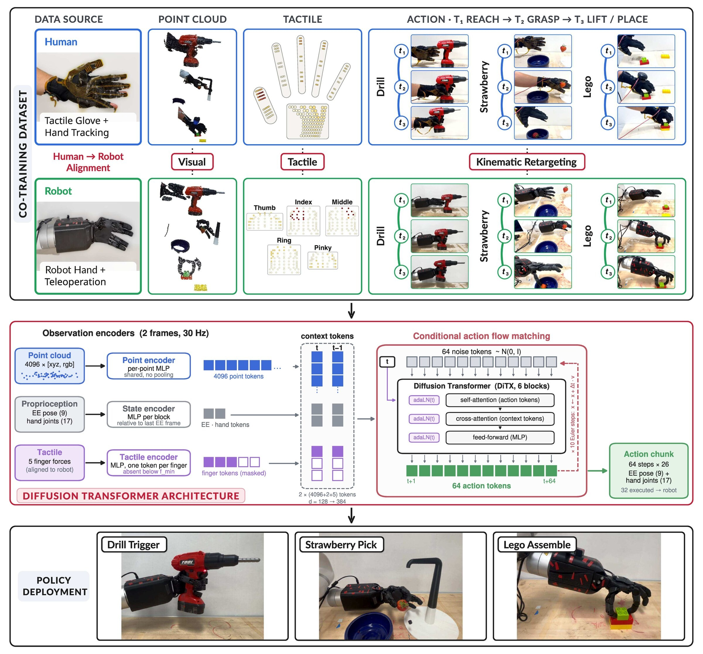
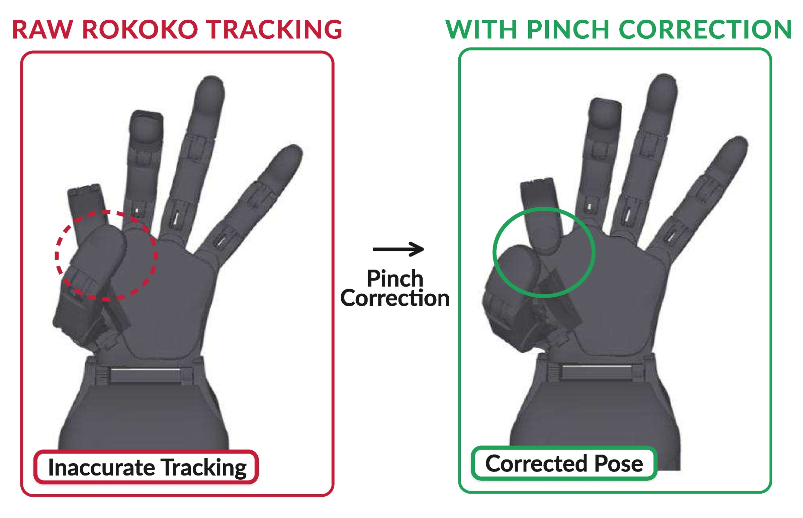
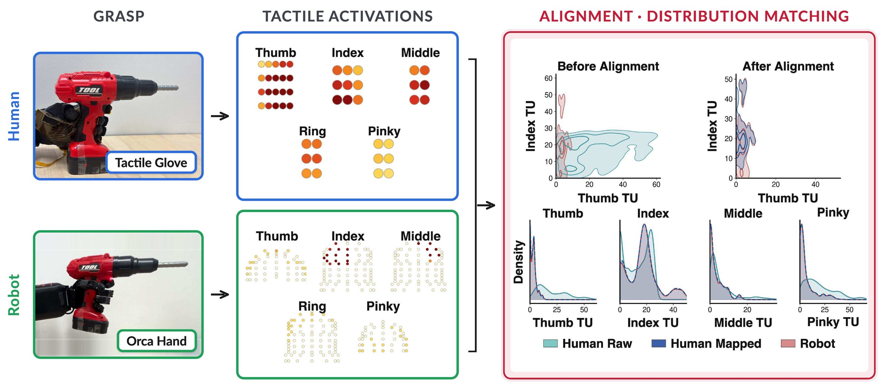
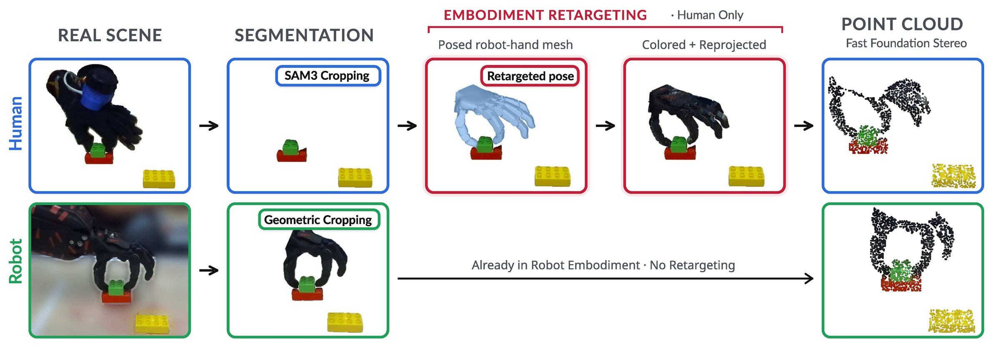
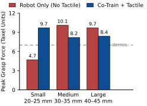
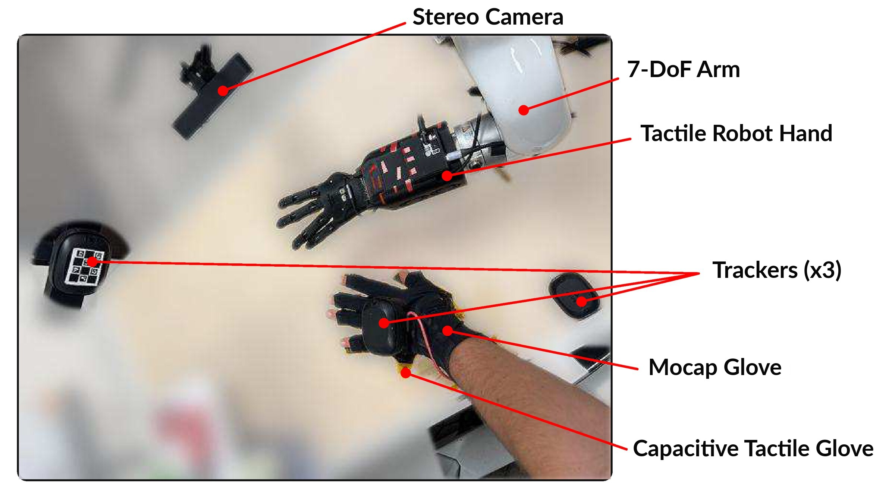

Under review, ICRA 2027

Human demonstrations are cheap, but a robot can only learn from them if they look, move and feel like its own. VisTacAlign aligns human demonstrations to the robot in vision, touch and kinematics, so a few robot demonstrations go much further on force-critical dexterous tasks.
Drill task: grasp, pull the trigger, and lift while holding it. Adding 26 aligned human demonstrations raises success from 50% to 70%.
Glove hand poses mapped to the robot hand, with a learned fingertip correction calibrated once against a headset as pseudo ground truth.
A static map carries human glove forces into the robot's own taxel units, fitted from unpaired demonstrations.
The human hand is removed and a robot-textured mesh is composited back into both stereo views, then stereo is re-run.
A 23.5M-parameter policy over point-cloud, proprioceptive and tactile tokens, trained with consistency flow matching.

Motion-capture gloves miss pinch grasps by about a centimetre. We calibrate once against a headset's hand tracker, fitting a small network that nudges each joint by at most 20° with bone lengths fixed.
| Metric | Raw glove | Corrected |
|---|---|---|
| Median fingertip error | 13.7 mm | 7.1 mm |
| Thumb–index error at pinches | 11.8 mm | 3.4 mm |

The glove and the robot fingertips share nothing: different layout, gain and range. We reduce each to one force per finger and fit a single static map that carries the human distribution onto the robot's, in the robot's own units. Zero contact stays zero, and the policy and robot data are never transformed.

| Measure | Before | After |
|---|---|---|
| KS distance to robot marginal (thumb) | 0.33 | 0.08 |
| KS distance to robot marginal (index) | 0.42 | 0.08 |
| Human-vs-robot force classifier | 92% | 58% |
The human hand is erased from both stereo views and the robot's hand mesh, painted with real robot pixels, is composited in its place. Stereo is then run again, so the inserted hand carries the same sensor noise as real robot point clouds instead of looking pasted in.

| Measure | Before | Ours |
|---|---|---|
| Separability from sensed points (pasted mesh → composited) | 0.99 | 0.67–0.76 |
| Chamfer distance (glove point cloud → composited) | 13.3 mm | 10.2 mm |
| F-score at 10 mm (glove point cloud → composited) | 0.40 | 0.59 |
Three real-world tasks where success depends on force. 26H10R means 26 human and 10 robot demonstrations.
Rollouts are at the top of the page. From 10 robot demonstrations, adding 26 touchless human demonstrations lowers success to 30%. The same demonstrations with aligned touch raise it to 55%.
Touch is the difference. With 10 robot demonstrations, the same 26 human demonstrations hurt without aligned touch (35 → 30%) and help with it (→ 55%). With 26 robot demonstrations they add 20 points.
| Demos | Obs. | Human tact. | Approach | Activate | Lift |
|---|---|---|---|---|---|
| 26R | RGB | – | 100 | 35 | 35 |
| 26R | PC | – | 90 | 65 | 50 |
| 26H26R | PC | yes | 80 | 70 | 70 |
| 10R | PC | – | 85 | 65 | 35 |
| 26H10R | PC | no | 95 | 65 | 30 |
| 26H10R | PC | yes | 100 | 55 | 55 |
Pluck a strawberry held by a magnet: hard enough to beat the magnet, gentle enough not to crush it. Without touch the policy fails on large fruit entirely.
Touch regulates force. The co-trained tactile policy wins at every size, and on large fruit it is the difference between 0% and 70%.
| Fruit size | Robot only | Co-train + tactile |
|---|---|---|
| Small (20–25 mm) | 60 | 90 |
| Medium (30–35 mm) | 70 | 80 |
| Large (40–45 mm) | 0 | 70 |

Pick, align, push until it snaps, retreat. Human data takes success from 10% to 80%, and without the visual alignment the push and retreat stages collapse.
The recipe scales, and vision alignment carries it. Success grows with robot demonstrations (40 → 60 → 80%). Without Rp2d the same data gives 10% and 25%, and without touch 70%.
| Demos | Tactile | Rp2d | Pickup | Align | Push | Retreat |
|---|---|---|---|---|---|---|
| 30R | yes | – | 70 | 10 | 10 | 10 |
| 50H10R | yes | yes | 90 | 50 | 40 | 40 |
| 50H20R | yes | yes | 60 | 60 | 60 | 60 |
| 50H30R | yes | yes | 100 | 80 | 80 | 80 |
| 50H10R | yes | no | 100 | 50 | 10 | 10 |
| 50H20R | yes | no | 100 | 100 | 30 | 25 |
| 50H30R | no | yes | 70 | 70 | 70 | 70 |

The force map is fitted per task from unpaired samples, so each new task still needs a short robot recording of its contacts.
Reducing a fingertip to a single normal force discards the taxel layout and shear, which likely matters for in-hand manipulation and slip.
The three tasks are short and largely quasi-static. Long-horizon and dynamic manipulation are untested.
We argue for signal-space alignment on interpretability and guarantees by construction, and do not compare head-to-head against alignment in a learned latent space.
Three reasons. The aligned quantity is still a per-finger force in the robot's units, so it can be checked directly against the robot distribution with standard statistics, which is exactly what the tables above do. The map is fitted once and deterministically from a few thousand unpaired frames, with one hyperparameter and no encoder to train. And because it is static and acts frame by frame, it cannot shift the timing of contact events.
We do not compare head-to-head against a learned latent alignment. Our case rests on interpretability and on guarantees that hold by construction, and quantifying that trade-off is the most immediate item of future work.
Because a pasted mesh is not a measurement. Its points are noise-free, uniformly dense, and cover surfaces a single-view sensor could never see. A simple roughness test separates them from real sensed points almost perfectly, at 0.99 area under the curve, which means a policy can learn that shortcut too. Running stereo on the composite drops that to 0.67–0.76.
Yes. The tactile map is fitted per task from unpaired force samples, so a short robot recording of the task's contacts is still needed. The result is not that human data replaces robot data, but that it substantially raises what a small number of robot demonstrations is worth.
The policy has 23.5M parameters. At deployment, stereo runs at 20 Hz, the glove at 60 Hz and the robot taxels at 30 Hz. We sample 10 flow steps and execute the first 32 of a 64-step chunk, about 1.1 seconds, before replanning, which takes 269 ms on a consumer GPU.
That is the clearest single effect. On the strawberry task the robot-only policy under-grips small fruit and over-grips large fruit, and never plucks the largest size. The co-trained policy holds a narrow force band across all three sizes and succeeds on every one. Grasp force is precisely the quantity the tactile alignment transfers from the human hand.